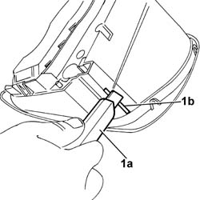
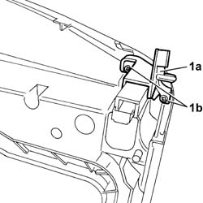
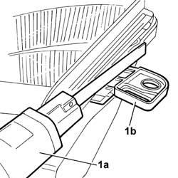
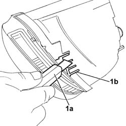
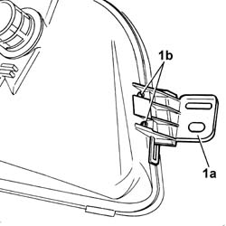
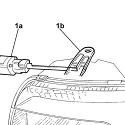
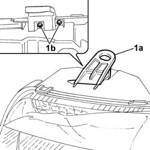

5540B84 UPPER BRACKET SECURING ONE FRONT LIGHT CLUSTER LEFT OR RIGHT TO THE BODY REPL
- Path
- Procedures > 55 ELECTRICAL EQUIPMENT > 5540 EXTERIOR LIGHTING > 5540B HEADLAMPS > 5540B84 UPPER BRACKET SECURING ONE FRONT LIGHT CLUSTER LEFT OR RIGHT TO THE BODY REPL
- Kind
- repair procedure (removal / refitting; the operation number is the code)
- Applies to
- all engines; all production periods
- Interactive page
- https://sloeber94.github.io/elrnDB-fPnd/en/#/169001874
Applies to: all engines; all production periods
1. Using a power saw (1a), cut the edges (1b) of the damaged left side bracket.

Applies to: all engines; all production periods
1. Using a cutter (1a) remove any residues (1b) from the surface attached to the light cluster.

Applies to: all engines; all production periods
1. Fit the new left side bracket (1a), then tighten the fixing bolts (1b) in the openings in the lamp housing.

Applies to: all engines; all production periods
1. Using a power saw (1a), cut the edges (1b) of the damaged right side bracket.

Applies to: all engines; all production periods
1. Using a cutter (1a) remove any residues (1b) from the surface attached to the light cluster.

Applies to: all engines; all production periods
1. Fit the new right side bracket (1a), then tighten the fixing bolts (1b) in the openings in the lamp housing.

Applies to: all engines; all production periods
1. Using a power saw (1a), cut the edges (1b) of the damaged upper bracket.

Applies to: all engines; all production periods
1. Using a cutter (1a) remove any residues (1b) from the surface attached to the light cluster.
Applies to: all engines; all production periods
1. Fit the new upper bracket (1a), then tighten the fixing bolts (1b) in the openings in the lamp housing.
